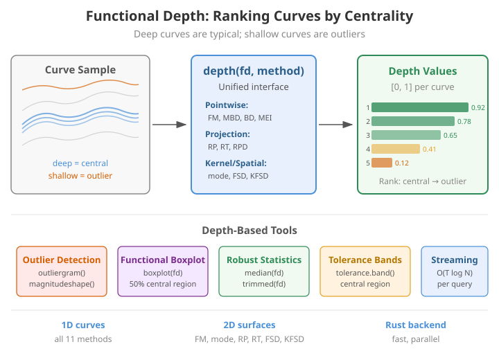
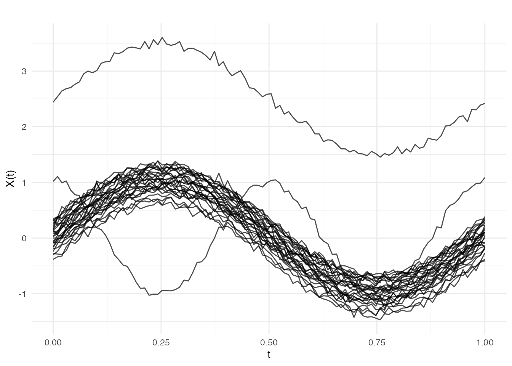
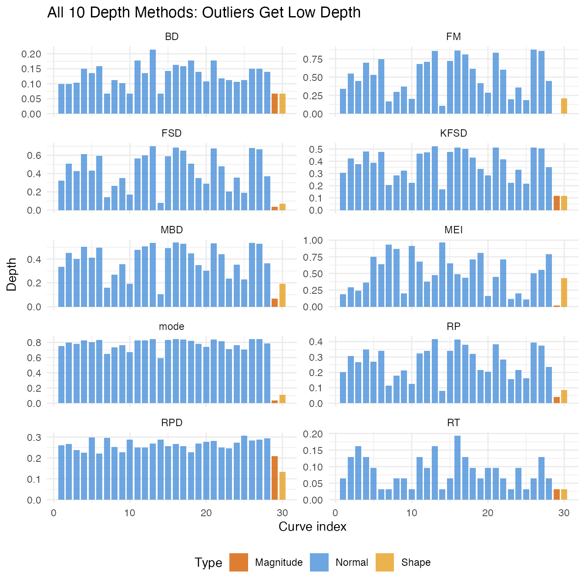
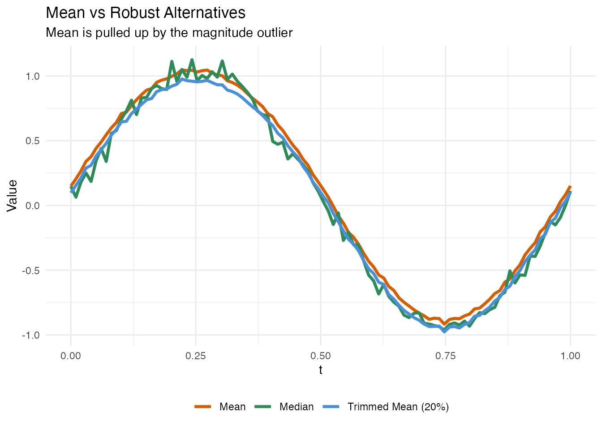

Introduction
Functional depth generalizes the notion of “how central is this observation?” from univariate statistics (where the median has maximum depth) to the space of curves. Given a sample of curves, each curve receives a depth value in : high values indicate typical, central curves; low values indicate unusual, peripheral curves.
Depth is a fundamental building block in functional data analysis because it provides:
- Nonparametric ranking — order curves from most central to most outlying without assuming a distribution
- Robust summary statistics — the functional median (deepest curve) and trimmed mean are resistant to outliers
-
Outlier detection — curves with low depth are
candidate outliers, used by
outliergram()andmagnitudeshape() - Tolerance bands — the central region containing the deepest of curves defines simultaneous confidence bands
-
Functional boxplot —
boxplot(fd)uses depth to define the 50% central region and fence -
Classification — depth values serve as features for
DD-classifiers (
fclassif(..., method = "DD")) - Quality control — streaming depth enables online monitoring of new curves against a reference sample

Available Methods
| Method | Function | Description | Supports 2D |
|---|---|---|---|
| FM | depth.FM() |
Fraiman-Muniz: integrates pointwise univariate depth | Yes |
| MBD | depth.MBD() |
Modified Band Depth: proportion of time inside random bands | No |
| BD | depth.BD() |
Band Depth: fraction of bands fully containing the curve | No |
| MEI | depth.MEI() |
Modified Epigraph Index: proportion above/below other curves | No |
| mode | depth.mode() |
Modal Depth: kernel density in function space | Yes |
| RP | depth.RP() |
Random Projection: halfspace depth of projected scores | Yes |
| RT | depth.RT() |
Random Tukey: Tukey depth via random projections | Yes |
| RPD | depth.RPD() |
RP with Derivatives: includes curve shape information | No |
| FSD | depth.FSD() |
Functional Spatial Depth: based on spatial signs | Yes |
| KFSD | depth.KFSD() |
Kernel FSD: smoothed functional spatial depth | Yes |
| streaming | streaming.depth() |
O(T log N) per query via pre-sorted reference | No |
All methods are accessible through the unified
depth(fd, method = "...") interface.
Generating Example Data
We simulate a sample of smooth curves with two outliers: one shifted in magnitude and one with a different shape.
n <- 30
m <- 100
argvals <- seq(0, 1, length.out = m)
# Normal curves: sine + individual variation
data <- matrix(0, n, m)
for (i in 1:(n - 2)) {
data[i, ] <- sin(2 * pi * argvals) + rnorm(1, 0, 0.2) + rnorm(m, 0, 0.05)
}
# Magnitude outlier (shifted up)
data[n - 1, ] <- sin(2 * pi * argvals) + 2.5 + rnorm(m, 0, 0.05)
# Shape outlier (different frequency)
data[n, ] <- cos(4 * pi * argvals) + rnorm(m, 0, 0.05)
fd <- fdata(data, argvals = argvals)
plot(fd, main = "30 Curves with 2 Outliers",
xlab = "t", ylab = "X(t)")
Curve 29 (magnitude outlier) is shifted up; curve 30 (shape outlier) has a different oscillation pattern.
Pointwise Depth Methods
Fraiman-Muniz Depth (FM)
FM depth integrates univariate depth (based on the empirical CDF) at each time point over the domain:
d_fm <- depth.FM(fd)
cat("FM depth range:", round(range(d_fm), 3), "\n")
#> FM depth range: 0 0.877
cat("Magnitude outlier (curve 29):", round(d_fm[n - 1], 4), "\n")
#> Magnitude outlier (curve 29): 0
cat("Shape outlier (curve 30):", round(d_fm[n], 4), "\n")
#> Shape outlier (curve 30): 0.2113
cat("Deepest curve:", which.max(d_fm), "with depth", round(max(d_fm), 4), "\n")
#> Deepest curve: 26 with depth 0.8767Modified Band Depth (MBD)
MBD measures the proportion of time a curve lies within the band formed by random pairs of other curves. It captures both magnitude and shape information.
Projection-Based Methods
Random Projection Depth (RP)
RP projects functional data to random directions and computes halfspace depth in the projected space. This method works for both 1D and 2D functional data.
Random Tukey Depth (RT)
RT uses Tukey’s halfspace depth on random projections. It tends to produce coarser depth rankings but is computationally fast.
Kernel and Spatial Methods
Modal Depth
Modal depth is based on kernel density estimation in function space. Curves in high-density regions receive high depth.
d_mode <- depth.mode(fd)
cat("Mode depth - outlier 29:", round(d_mode[n - 1], 4),
" outlier 30:", round(d_mode[n], 4), "\n")
#> Mode depth - outlier 29: 0.0333 outlier 30: 0.1092Functional Spatial Depth (FSD)
FSD is based on spatial signs (unit vectors pointing from the curve to all other curves). It is affine-invariant and robust.
Kernel Functional Spatial Depth (KFSD)
KFSD smooths the spatial depth using a kernel, improving performance in finite samples.
d_kfsd <- depth.KFSD(fd)
cat("KFSD depth - outlier 29:", round(d_kfsd[n - 1], 4),
" outlier 30:", round(d_kfsd[n], 4), "\n")
#> KFSD depth - outlier 29: 0.1151 outlier 30: 0.1157Comparing Methods
df_depths <- data.frame(
curve = 1:n,
FM = d_fm,
MBD = d_mbd,
BD = d_bd,
MEI = d_mei,
RP = d_rp,
RT = d_rt,
mode = d_mode,
FSD = d_fsd,
KFSD = d_kfsd,
RPD = d_rpd,
type = c(rep("Normal", n - 2), "Magnitude", "Shape")
)
# Reshape for plotting
df_long <- do.call(rbind, lapply(
c("FM", "MBD", "BD", "MEI", "RP", "RT", "mode", "FSD", "KFSD", "RPD"),
function(method) {
data.frame(
curve = df_depths$curve,
depth = df_depths[[method]],
method = method,
type = df_depths$type
)
}
))
ggplot(df_long, aes(x = curve, y = depth, fill = type)) +
geom_col(alpha = 0.8, width = 0.8) +
facet_wrap(~ method, scales = "free_y", ncol = 2) +
scale_fill_manual(values = c("Normal" = "#4A90D9", "Magnitude" = "#D55E00",
"Shape" = "#E6A020")) +
labs(x = "Curve index", y = "Depth", fill = "Type",
title = "All 10 Depth Methods: Outliers Get Low Depth") +
theme(legend.position = "bottom")
All methods assign low depth to both outliers, but they differ in sensitivity:
- FM, MBD, BD, MEI are pointwise — they detect magnitude outliers well but may miss subtle shape outliers
- RP, RT, RPD use random projections — RPD is particularly good at shape outliers because it includes derivatives
- mode, FSD, KFSD use density/spatial approaches — they are robust to the choice of metric
Depth-Based Statistics
Functional Median and Trimmed Mean
# Functional median (deepest curve)
fd_median <- median(fd, method = "FM")
# Trimmed mean (exclude 20% shallowest)
fd_trim <- trimmed(fd, trim = 0.2, method = "FM")
# Ordinary mean (affected by outliers)
fd_mean <- mean(fd)
df_robust <- data.frame(
t = rep(argvals, 3),
value = c(fd_mean$data[1, ], fd_median$data[1, ], fd_trim$data[1, ]),
type = factor(rep(c("Mean", "Median", "Trimmed Mean (20%)"), each = m),
levels = c("Mean", "Median", "Trimmed Mean (20%)"))
)
ggplot(df_robust, aes(x = t, y = value, color = type)) +
geom_line(linewidth = 1.2) +
scale_color_manual(values = c("Mean" = "#D55E00", "Median" = "#2E8B57",
"Trimmed Mean (20%)" = "#4A90D9")) +
labs(x = "t", y = "Value", color = NULL,
title = "Mean vs Robust Alternatives",
subtitle = "Mean is pulled up by the magnitude outlier") +
theme(legend.position = "bottom")
Functional Boxplot
boxplot(fd, main = "Functional Boxplot (FM Depth)")Depth Against a Reference Sample
All depth methods accept a separate reference sample via
fdataori:
# Split into reference (first 20) and query (last 10)
fd_ref <- fd[1:20, ]
fd_query <- fd[21:n, ]
# Compute depth of query curves against reference
d_query <- depth.FM(fd_query, fdataori = fd_ref)
cat("Depth of query curves against reference:\n")
#> Depth of query curves against reference:
for (i in seq_along(d_query)) {
label <- if (20 + i == n - 1) " (magnitude outlier)"
else if (20 + i == n) " (shape outlier)"
else ""
cat(sprintf(" Curve %d: %.4f%s\n", 20 + i, d_query[i], label))
}
#> Curve 21: 0.7760
#> Curve 22: 0.6760
#> Curve 23: 0.0790
#> Curve 24: 0.2160
#> Curve 25: 0.0700
#> Curve 26: 0.8400
#> Curve 27: 0.8690
#> Curve 28: 0.5190
#> Curve 29: 0.0000 (magnitude outlier)
#> Curve 30: 0.1520 (shape outlier)Method Selection Guide
| Use case | Recommended method | Why |
|---|---|---|
| General purpose | FM or MBD | Well-established, interpretable |
| Shape-sensitive | RPD | Includes derivatives |
| 2D surfaces | FM, RP, FSD | Support 2D data |
| Functional boxplot | MBD | Default in boxplot.fdata()
|
| Large reference sets | streaming | O(T log N) per query |
| Outlier detection | MBD + outliergram | Complementary views |
| Robust estimation | FM | Used by median(), trimmed()
|
See Also
-
vignette("articles/outlier-detection")— depth-based outlier detection methods -
vignette("articles/streaming-depth")— streaming depth for online monitoring -
vignette("articles/tolerance-bands")— depth-based tolerance bands and central regions
References
- Fraiman, R. and Muniz, G. (2001). Trimmed means for functional data. Test, 10(2), 419–440.
- Lopez-Pintado, S. and Romo, J. (2009). On the concept of depth for functional data. JASA, 104(486), 718–734.
- Cuevas, A., Febrero, M., and Fraiman, R. (2007). Robust estimation and classification for functional data via projection-based depth notions. Computational Statistics, 22, 481–496.
- Chakraborty, A. and Chaudhuri, P. (2014). The spatial distribution in infinite dimensional spaces and related quantiles and depths. Annals of Statistics, 42(3), 1203–1231.